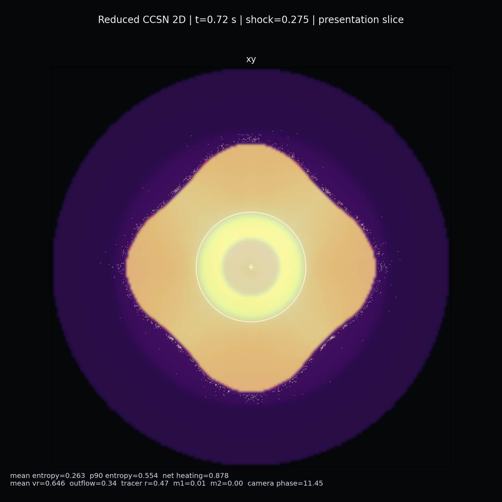

We're building a supernova (star core-collapse) simulator with offline rendering, with the final goal being to render a visually convincing simulation of the key stages of a supernova, including shock launch, shock stall, delayed neutrino-driven revival, buoyant plume formation, and asymmetric shock breakout.
Project update
What we've implemented so far:
2D reduced-physics solver
The foundation of our simulator is a 2D post-bounce model involving:
A stalled shock that revives on a delayed timescale driven by gain-region heating
Inner cooling near the proto-neutron star surface and heating in the gain region above it
Buoyancy-driven plumes seeded by angular perturbations
Low-mode asymmetry (dipole + quadrupole) that ramps in over time
Tracer particles track ejecta motion and make the outflow structure easier to read in rendered frames.
3D extension
Our extension into 3D (with our ultimate goal being to have a live rendering that you can pan through) required us to refactor the solver to work in arbitrary dimensions.
Volumetric dipole and quadrupole asymmetry forcing (not just 2D patterns extruded through z)
A tangential swirl field in the gain and shock region
Orthogonal xy, xz, yz slice insets for debugging
A pseudo-volumetric "hero" projection that composites emissive slices front-to-back with a depth-parallax shift — not physically correct volume rendering, but looks much more like a volumetric event than raw slices
Current results
The 2D baseline produces stable runs with visible shock stall, gain-region heating, and asymmetric plume growth. The 3D hero preset shows convincing early asymmetry from the dipole/swirl forcing, though late-time morphology still smooths out too much

sample 2d generation
Remaining work
The remaining work involves implementing a full 3D camera with some sort of user interactivity (most likely using three.js) and tuning the solver to maintain more distinct plume structure at late times.
Having access to more compute (8xH100s from our research projects), we are interested in exploring more high-resolution simulations with more tracer particles.